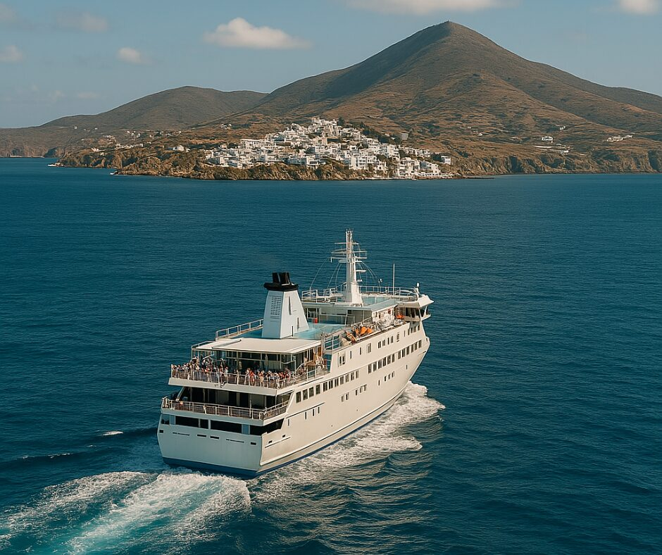
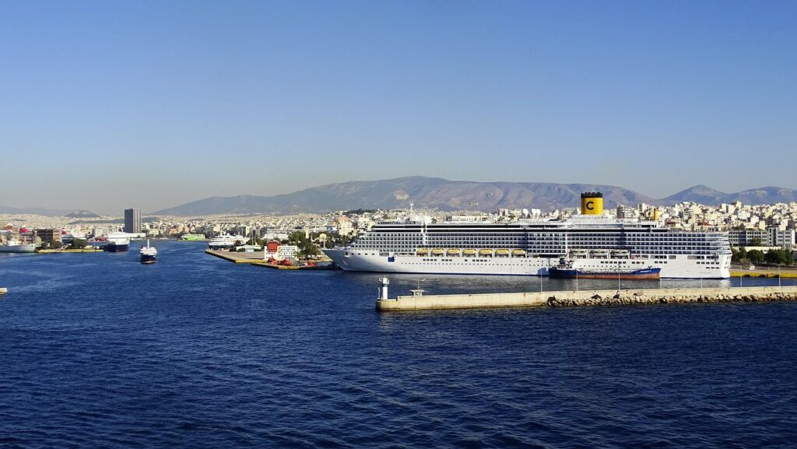
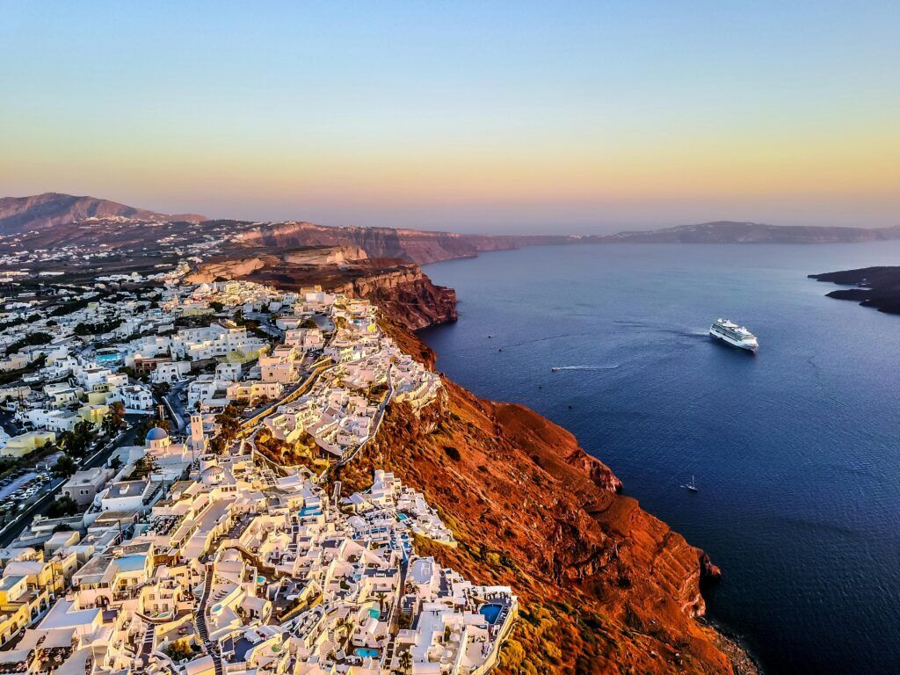
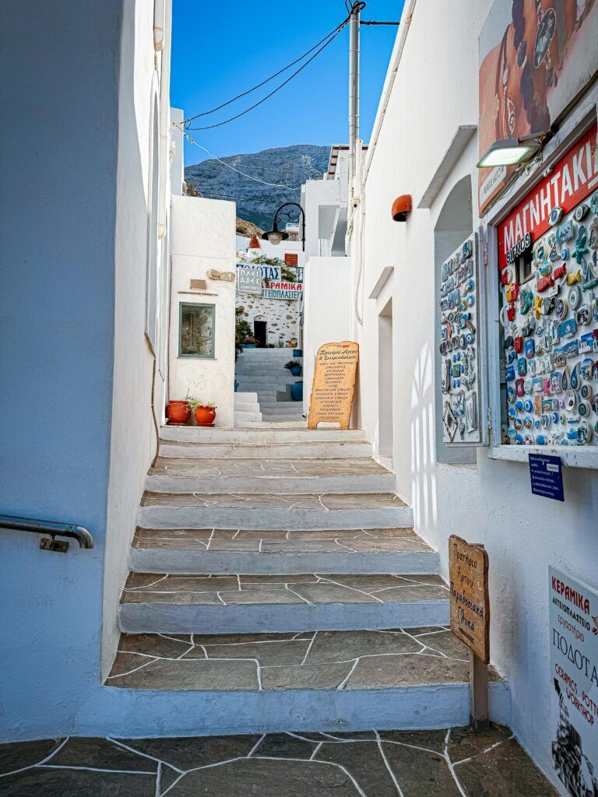
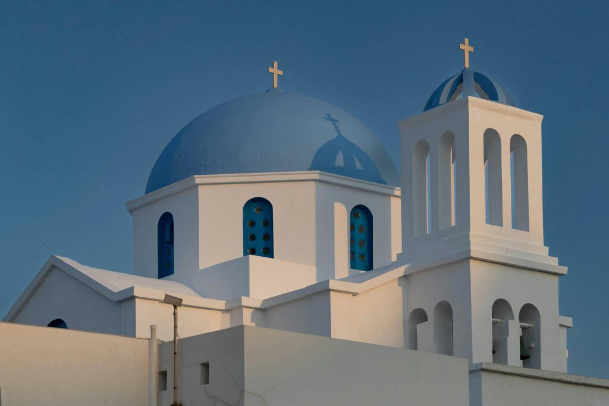
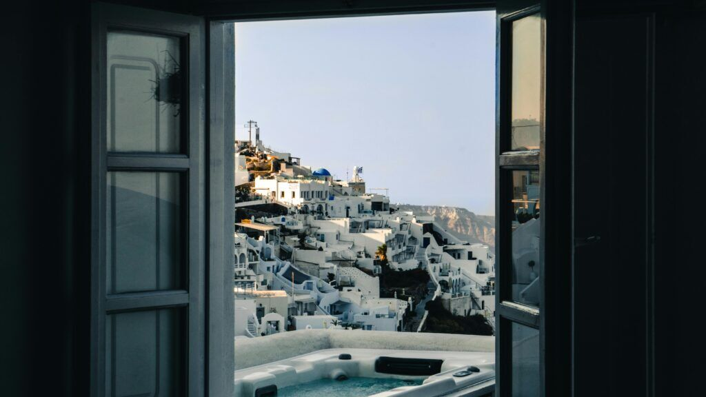

Waves of Hope
No borders. Just islands.
A journey by ferry through stories about migration, Greece.

No borders. Just islands.
We hopped between three Cycladic islands, sharing our stories with local islanders and, above all, with local school students.
Four Human Library events gave participants the chance to talk with strangers, meet local communities and inspire others with their life stories about migration.
Island hopping, step by step
The project closed where it began, in the port of Piraeus.
Piraeus, Athens
A night in a hotel close to the port, then an early start to catch the ferry to Ios.

Ios
After an eight hour ferry, the first island. The group got to know each other, introduced the project and ran the first Human Library.

Folegandros
Time to prepare and visit a local school, and to organise the second Human Library in the Chora, the main square.

Sifnos
A three hour ferry ride to share stories on board, then a second school visit and the last local event.

Piraeus, Athens
The last ferry from Sifnos brought the group back to the port and the same accommodation as the first night. 9 October was departures day.

What this chapter delivered
Ratings come from the participant feedback form.
What worked
- Human Library events held in unusual places, including on board a ferry, and in local schools.
- Organising the events together, talking to locals and exploring each island, with a group that felt like a family.
What we learned
- Visiting several islands in one week left little time to rest. Participants suggested fewer moves or more days.
I've learned that every story is unique and valuable, and that instead of looking for differences, we should try to see what we have in common.
We really became like a family and felt really safe sharing our stories together.
A library where the books are people
Here the books were stories of migration, and the library travelled by ferry. It opened on Cycladic islands, in a village square and in local schools, where students heard these stories straight from the people who lived them. It even set up on board a ferry.
How does it work? Readers choose a book from the catalogue and borrow it for a timed conversation. Respect comes first, books decide what they share, and nobody has to agree. The point is to understand.
See how the Human Library works